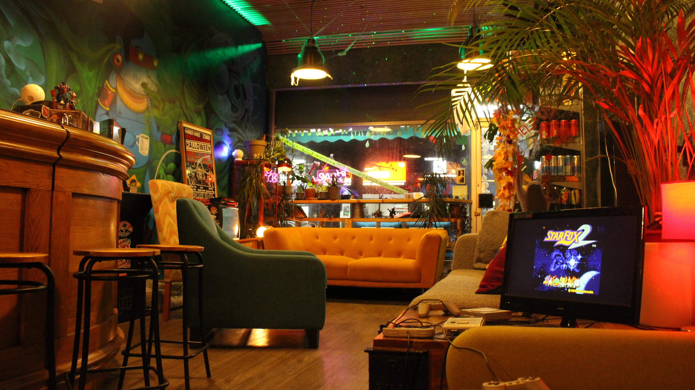
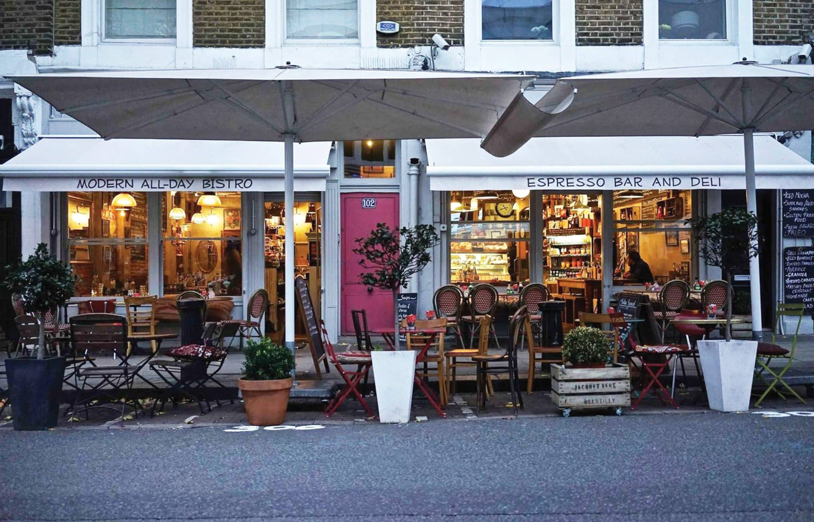

Cafés in London
Zombie Games Cafe & Bar

Zombie Games Cafe & Bar is a hidden gem perfect for gaming enthusiasts, offering a nostalgic focus on old consoles and board games. The cozy interior creates a welcoming atmosphere, and it is owned and operated by a friendly local man. You’ll often find local school kids working part-time, helping to prepare the exceptionally well-priced food. Its location, slightly removed from the city center, likely contributes to the affordable prices. The café offers a variety of hot drinks, canned beverages, and even a selection of gaming-themed cocktails. Best of all, there's no entry fee—just buy a coffee and enjoy unlimited access to games.
The nearest train station is Kilburn Underground Station, a convenient 10-minute walk away. If you prefer to avoid the walk, you can take the 32, 189, or 16 bus routes.
Golborne Deli & Wine Store

Golborne Deli & Wine Store might not be advertised as a café, but it truly feels like one! Nestled closer to the city center, this charming Italian deli shop offers a delightful range of artisanal products and a fantastic selection of freshly made pastries and foods. There are plenty of outdoor tables where you can sit back and relax after exploring the store’s wonderful finds. The in-house freshly baked pastries and daily Italian meals make every visit special. Plus, despite being in a prime location, the prices are pleasantly reasonable.
The closest station is Westbourne Park Station, just a 10-minute walk from the café. Alternatively, you can take the 23 bus to reach the café without walking.